長期トレンド
JKMとJEPXシステムプライスの推移グラフ
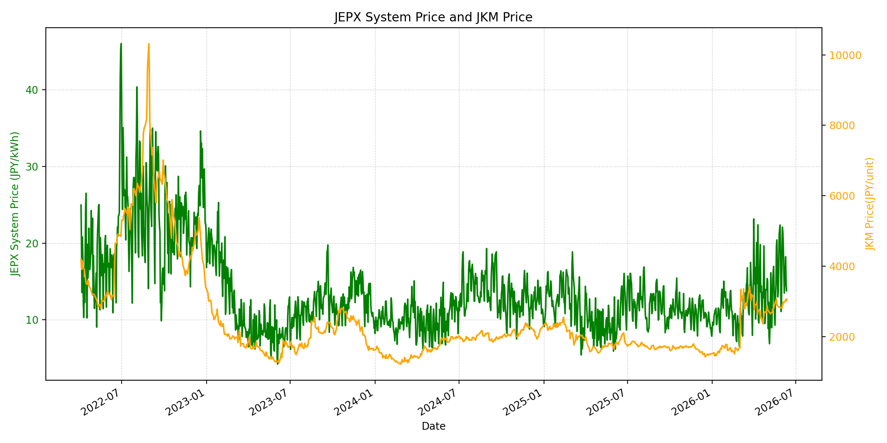
WTIの推移グラフ
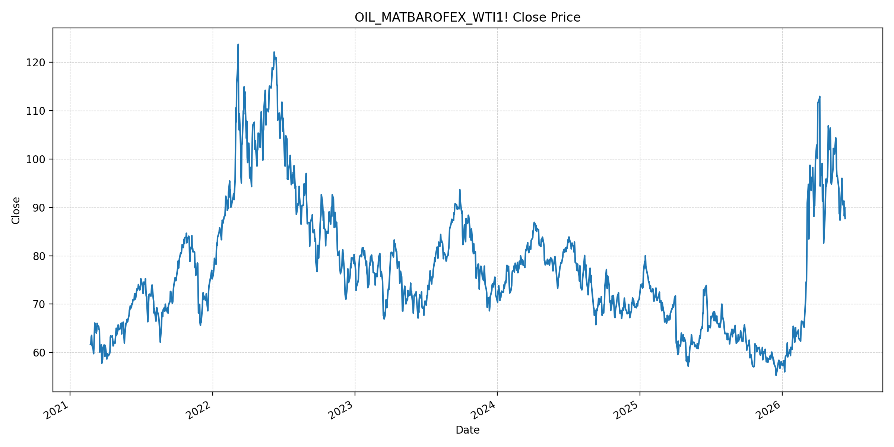
JEPXエリアプライスグラフ（直近一年分）
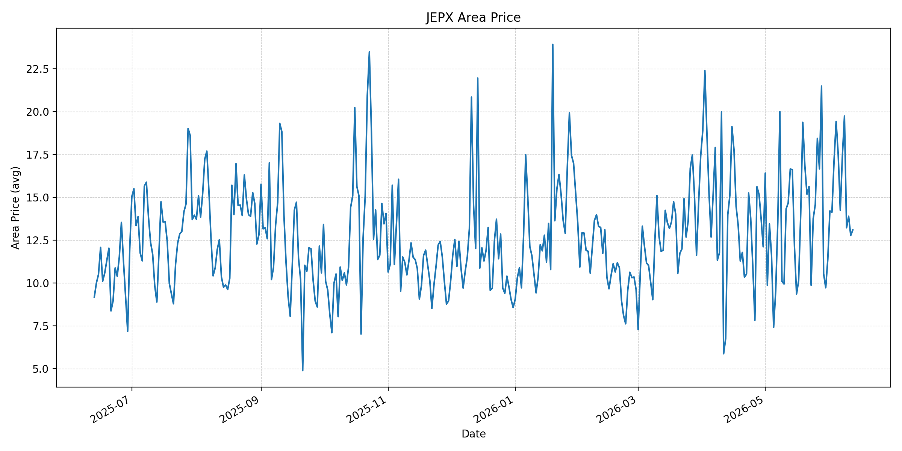
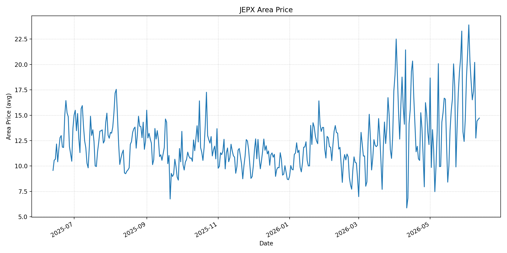
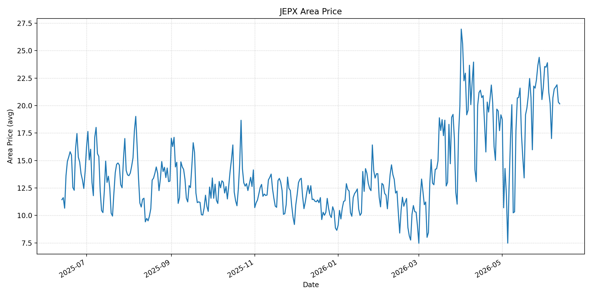
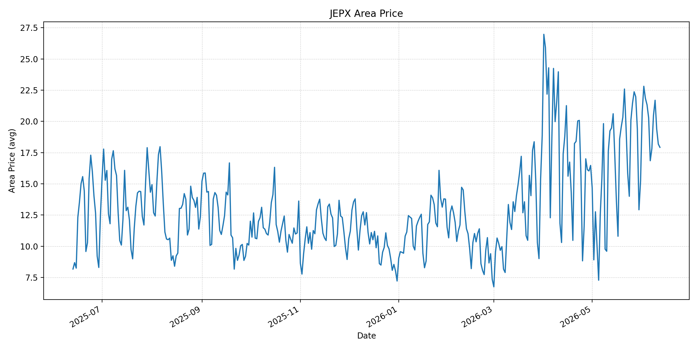
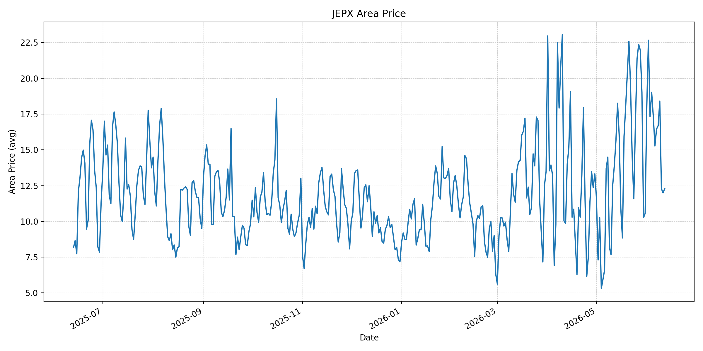
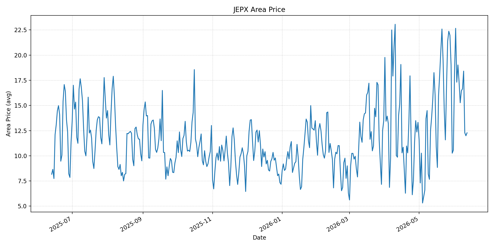
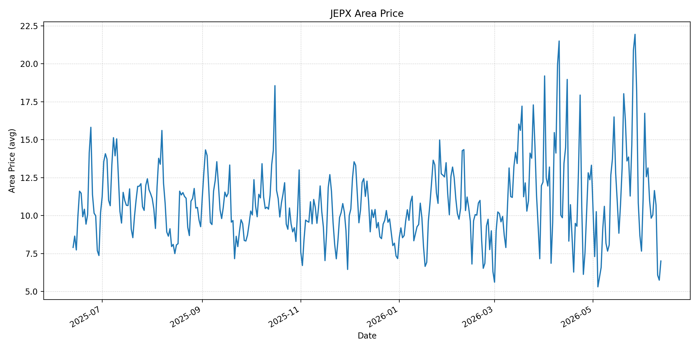
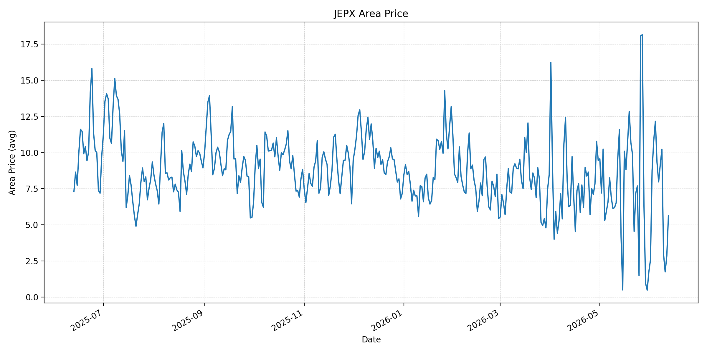
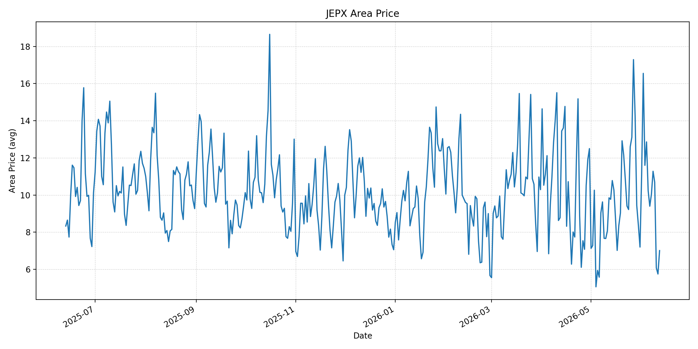
短期トレンド
JKMとJEPXシステムプライスの推移グラフ
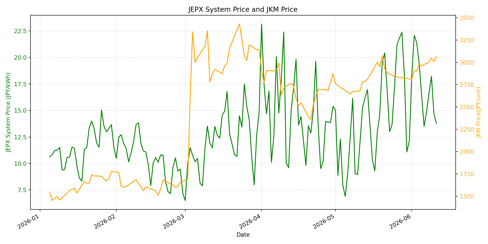
WTIの推移グラフ
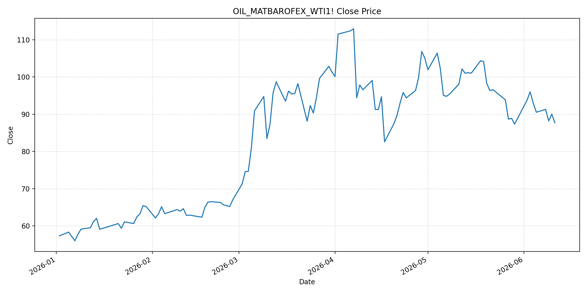
JEPXシステムプライス
JEPXは受渡日ベースの最新非空値で評価しています。最新値は 2026-06-12 分です。先週終値は 2026-06-05 時点の直近値、先月終値は 2026-05-31 時点の直近値で評価しています。
| エリア | 当日価格 | 前日価格 | 前日比（％） | 先週終値 | 先週比（％） | 先月終値 | 先月比（％） | 過去最高値 | 最高値比（％） |
|---|---|---|---|---|---|---|---|---|---|
| システム | 13.45 | 13.79 | -2.47 | 16.43 | -18.14 | 12.10 | 11.16 | 64.06 | -79.01 |
| 北海道 | 13.09 | 12.77 | 2.51 | 17.49 | -25.16 | 11.38 | 15.03 | 73.92 | -82.29 |
| 東北 | 14.72 | 14.59 | 0.89 | 18.27 | -19.43 | 14.64 | 0.55 | 84.92 | -82.67 |
| 東京 | 20.16 | 20.32 | -0.79 | 20.19 | -0.15 | 21.65 | -6.88 | 86.13 | -76.59 |
| 中部 | 17.92 | 18.18 | -1.43 | 20.29 | -11.68 | 15.25 | 17.51 | 52.06 | -65.58 |
| 北陸 | 12.28 | 11.99 | 2.42 | 17.35 | -29.22 | 10.56 | 16.29 | 46.48 | -73.58 |
| 関西 | 12.28 | 11.99 | 2.42 | 17.35 | -29.22 | 10.56 | 16.29 | 46.48 | -73.58 |
| 中国 | 7.01 | 5.75 | 21.91 | 11.02 | -36.39 | 7.66 | -8.49 | 46.48 | -84.92 |
| 四国 | 5.65 | 2.85 | 98.25 | 9.33 | -39.44 | 1.74 | 224.71 | 46.48 | -87.85 |
| 九州 | 7.01 | 5.75 | 21.91 | 10.23 | -31.48 | 7.20 | -2.64 | 40.54 | -82.71 |
LNG先物価格
最新値は 2026-06-11 の LNG(close) です。先週終値は 2026-06-04 時点の直近値、先月終値は 2026-05-29 時点の直近値で評価しています。
| 当日価格 | 前日価格 | 前日比（％） | 先週終値 | 先週比（％） | 先月終値 | 先月比（％） | 過去最高値 | 最高値比（％） |
|---|---|---|---|---|---|---|---|---|
| 3065.00 | 3010.00 | 1.83 | 2980.00 | 2.85 | 2826.00 | 8.46 | 10319.00 | -70.30 |
石油先物価格
最新値は 2026-06-11 の OIL(close) です。先週終値は 2026-06-04 時点の直近値、先月終値は 2026-05-29 時点の直近値で評価しています。
| 当日価格 | 前日価格 | 前日比（％） | 先週終値 | 先週比（％） | 先月終値 | 先月比（％） | 過去最高値 | 最高値比（％） |
|---|---|---|---|---|---|---|---|---|
| 87.71 | 90.03 | -2.58 | 93.04 | -5.73 | 87.36 | 0.40 | 123.70 | -29.09 |
ニュース
イラン情勢に関するニュース
- 2026年6月11日、APは、米国とイランが2日連続で交戦し、中東での敵対行為が拡大したと報じました。米国はイランの監視・通信・防空インフラを攻撃し、イランはバーレーンやクウェートへミサイル攻撃を行ったとされています。 参照: AP, 2026-06-11
- 2026年6月11日、Guardianは、米国の一連の空爆が4月停戦の最も深刻な破綻を示していると分析しました。トランプ大統領は和平合意が近いと主張していますが、イラン側は未確認で、軍事圧力が交渉を硬化させる可能性も指摘されています。 参照: The Guardian, 2026-06-11
ホルムズ海峡経由の石油・LNGに関するニュース
- 2026年6月11日、Guardianのライブ報道は、イランがホルムズ海峡を通過しようとしたタンカーを阻止したと伝えました。イラン軍は重要水路の閉鎖を確認し、無許可船舶への攻撃を警告しており、物流・保険料リスクは再び高まっています。 参照: The Guardian Live, 2026-06-11
- 同じGuardian報道では、和平合意が近いとの発言で原油価格が一時下落した一方、ホルムズ閉鎖・米軍攻撃・イランの反撃が価格変動を大きくしていると整理されています。OIL(close)は 87.71 まで下落しましたが、海上通航の正常化は確認できていません。 参照: The Guardian Live, 2026-06-11
ホルムズ海峡経由でない石油・LNGに関するニュース
- 過去24時間で、日本向けの非ホルムズ新規大型調達に関する強い追加報道は確認できませんでした。直近ではKplerが、日本の2026年LNG需要見通しを64.9百万トンへ0.6百万トン引き上げ、Q2からQ3に8から10カーゴの追加需要を見込むと分析しています。 参照: Kpler, 2026年5月
- JOGMECの2026年6月8日掲載の週次では、6月1日から5日の北東アジアJKMは前週末の18ドル前半から6月5日に18ドル後半へ上昇し、米イラン和平協議停止、豪州ストライキ、天候要因が上昇材料になったと整理されています。 参照: JOGMEC, 2026-06-08
日本国内のイラン戦争に関係するニュース
- 過去24時間で、JEPX制度や国内電力市場制度を直接変更する新規の強い発表は確認できませんでした。直近の国内対策として、経済産業省は2026年5月20日に、今夏は全エリアで最低限必要な予備率3%を確保できるため節電要請は実施しないと発表しています。 参照: 経済産業省, 2026-05-20
- 同発表では、国際情勢の変化、異常気象、発電所の休廃止、火力発電所の地域集中などにより、電力需給は予断を許さないとも説明されています。国内供給力の余力は確保されていても、燃料価格の上振れは卸市場へ波及し得ます。 参照: 経済産業省, 2026-05-20
インサイト
ニュース事項による日本の電力市場への影響（短期：数日〜1週間）
- JEPXシステムプライスは 13.45 円/kWhで前日比 -2.47%、先週比 -18.14% と下落しました。ただし東京は 20.16 と20円台を維持し、中部も 17.92 で、西日本の中国 7.01、九州 7.01 との差が残っています。
- OILは 87.71 と前日比 -2.58%、先月比 0.40% まで低下しました。和平期待は原油の下押し材料ですが、Guardianが報じるタンカー阻止とホルムズ閉鎖警告を踏まえると、数日単位で燃料リスクが解消したとは見にくいです。
- LNGは 3065.00 と前日比 1.83%、先月比 8.46% です。JEPX平均が下がってもLNGが上がっているため、短期では東京の20円台維持、LNG調達コスト、ホルムズ通航の実績を同時に確認する必要があります。
ニュース事項による日本の電力市場への影響（長期：1ヶ月〜半年）
- ホルムズ海峡の閉鎖・通航許可制が続く場合、LNGの先月比 8.46% 上昇は夏季以降の火力燃料費に残ります。Kplerの日本LNG需要上方修正とJOGMECのJKM上昇整理を合わせると、非ホルムズ調達だけで燃料費上振れを吸収するのは難しいです。
- JEPXシステムは先月比 11.16% まで上昇幅が縮小しましたが、東京は先月比 -6.88% にとどまり、西日本の低価格とは差があります。1ヶ月から半年では、燃料価格よりもエリア別需給・連系線制約が価格差を固定化する可能性があります。
- 経済産業省は今夏の節電要請を見送っていますが、国際情勢や火力発電所の地域集中をリスクとして明示しています。国内供給予備率が確保されても、ホルムズ正常化の実績、LNG在庫、東西エリア価格差を継続監視する局面です。